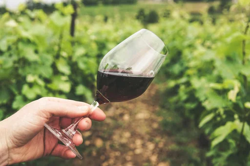
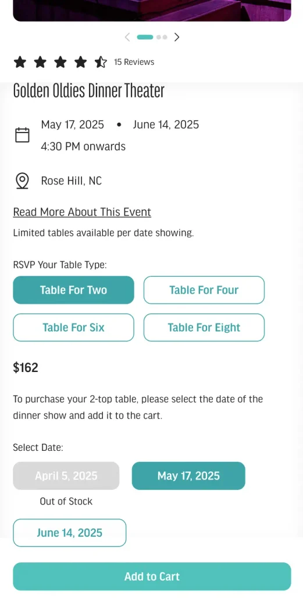

02Experience DesignWinery PlatformUX DesignEcommerceOn-Site to Online
Designing a Modern Winery Experience
The winery's online experience felt fragmented and lacked a clear path for people to explore and engage. I redesigned the journey to bring clarity, improve navigation, and lift the overall experience.
Industry
Winery & Hospitality USA
Duration
12–16 weeks 2025
Role
UX-UI Designer Strategy, Information Architecture, UI Design
Team
Project Managers, Developers, QA, and Clients
Case Study Overview
A winery that had grown into memberships, loyalty tiers, events, and three locations, with a website that still worked like a simple shop.
I led the UX and UI end-to-end, shaping how wine club, discounts, accounts, and events fit together without overwhelming the people using them.
01My role across strategy, information architecture, flows, and UI.
02The business: a winery built on hospitality and in-person experiences.
03Why the old site couldn't keep up as programs multiplied.
04Four interventions: Wine Club, discounts, My Account, and events & content.
05Expected outcomes and what I learned about designing around business logic.
My Role & Involvement
This project was led end-to-end from a UX and UI perspective. Collaboration with product, engineering, and business stakeholders was central to the work.
Structure
Defined the information architecture, core flows, and interaction patterns across 50+ pages.
Stakeholders
Ran stakeholder interviews to understand programs, pricing rules, and where customers got stuck.
Engineering
Worked with developers on feasibility, including the case for a headless checkout.
Discovery
With no time for formal user research, I ran a heuristic audit of the existing site to ground decisions.
About the Business
This project focused on redesigning the digital experience for a winery based in the southern United States. They make their own wine and host people in person across multiple locations.
Over time the site had to carry far more than bottles: Wine Club memberships, a loyalty program, events and dinner shows, recipes, and in-store touchpoints.


The Problem
The existing website struggled to support the business as it expanded its offerings and audience. It worked, but it felt dated and didn't reflect the scale, personality, or ambition of the brand.
01Outdated UI no longer reflected the brand's hospitality and in-person experiences.
02New programs needed clearer communication and stronger digital structure.
03Events and locations were difficult to understand and navigate.
04The online experience didn't support discovery for new audiences.
The challenge
As new programs, discounts, and experiences were added, the risk of overwhelming people grew. The goal was to surface the right information at the right time without exposing unnecessary complexity.
50+
The redesign covered over 50 pages across key user flows.
Homepage
Product listing
Product detail
Location pages
Customer programs
Wine Club
Event ticketing
Blog
Restaurant menus
Cart
Checkout
Account hub
Content pages
Strategic UX Interventions
01
Rethinking the Wine Club Experience
The club mixed bottles the winery picks with bottles members choose themselves. Pricing depended on all of it, so the experience had to make the rules feel simple.
Clearly separated Duplin Picks from Your Picks, with an easy way to swap.
Added progress feedback so members could see bundle size and discount thresholds as they built a box.
Made joining a guided flow, and moved ongoing management into the account area.
Pushed for a headless checkout: three overlapping discounts (member tier, bottle count, shipment frequency) couldn't be handled cleanly by Shopify's native checkout.
Members mix and match bottles, with the bundle building up on the right.A progress bar shows how many more bottles unlock the next saving.
Swapping picks, managing a membership, and seeing the new total before confirming.
Ongoing management lives in the account: payment, address, wine selection, and skipping an order.
02
Making Discounts Understandable Without Exposing Rules
Instead of explaining pricing logic, the UI focuses on outcomes. People see what they save, not how it's calculated.
Show the savingSavings are stated plainly at the bundle, cart, and checkout.
Show the next stepProgress cues show how close someone is to a better discount.
Best offer winsThe system applies the best available offer, so nobody has to compare rules.
Loyalty tiers laid out as perks you can compare, with three simple steps above.
Savings unlock as bottles are added, and every tier shows exactly what it gives.
03
Designing My Account as a Central Control Hub
The default Shopify account couldn't show Wine Club, loyalty, and orders together, so customers emailed or asked staff for basic answers. The new hub brings it into one place:
Manage Wine Club shipments.
See loyalty points and progress to the next tier.
Access Social Club membership details.
Review past orders.
Handle legacy subscriptions like the Legacy Club Run.
The dashboard leads with the relationship: tier, rewards, and what to do next, then orders and products.
04
Supporting Events, Locations, and Content at Scale
Events, locations, recipes, and blogs needed a structure that could grow without custom work every time a new one was added.
Structured listings and detail pages show availability, timing, and ticketing, connected to third-party systems.
Event tickets offer contextual add-ons, like table sizes, to encourage upgrades.
Recipes and blogs link to products, and recipes let people add the featured wines to the cart.
Event pages bring dates, table options, and location into one view.Recipes double as a way to discover wines, with ingredients ready to add to cart.
Results
The project is in development and hasn't launched yet. Decisions were validated through stakeholder reviews and technical feasibility discussions. The expected outcomes:
Improved clarity across programs
Wine Club, loyalty, and discounts explained by outcome rather than by rule.
Brand and experience aligned
A UI that finally reflects the winery's hospitality and in-person warmth.
A framework that scales
New programs, locations, and content can be added without restructuring the site.
Key Learnings
This project reinforced the importance of designing UI as an interpreter of business logic, not a mirror of it.
Headless, when it earns it
Going headless is worth it when flexibility, clarity, and long-term scale matter more than what prebuilt systems offer. Hidden complexity still has to be designed for.
Accounts as relationship hubs
For a business built on repeat visits, the account area works best as the center of the relationship, not a utility page.